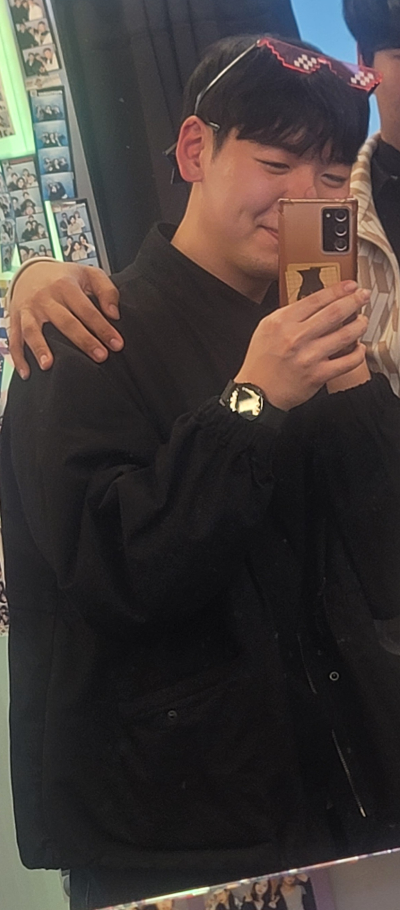

최준혁 자기소개

| 주 활동지역 |
부산 (본가 거제도) |
| 나이 |
26살 |
| 생일 |
2000년 2월 18일 |
자기소개
안녕하세요! 저는 현재 부산에서 비대면 반 수업을 듣고있는 최준혁 입니다.
저는 경영학과에서 컴퓨터 공학과를 복수전공을 했는데요.
코딩 실력이
많이 부족하지만 이번 it’s your life를 통해서 많은 것을 배워 가도록
하겠습니다 !!
기본 작성 사항
-
MBTI
-
좋아하는 노래, 가수 (인디 노래를 많이 좋아합니다ㅎㅎ)
- 백예린 : zero, 그건 아마 우리의 잘못은 아닐거야
- 검정치마 : 하와이 검은모래
- 지소쿠리 클럽 : take on
-
취미
- 축구 하기 (일주일에 한번은 축구 하러 가는 거 같습니다.)
-
영화 보기 ( 최근 영화도 좋아하지만 명작 영화 보는것을 좋아합니다.)
-
요리하기 (유투브 를 따라해서 맛있는 음식 만들어서 먹는걸
좋아합니다..)
TMI
-
여동생이 있는데 저보다 코딩을 잘해요.. 근데 물어봐도 안 알려주더라구요…
-
자취를 하다 보니 볶음밥을 제일 잘하게 되었어요 (오늘 점심시간에 먹은
볶음밥입니당)
- 처음에 낯을 많이 가리는데 친해지면 장난을 많이 쳐요 ㅎㅎ
-
중학생때 영국에 1년동안 산 적이 있는데 한국 돌아와서 영어도 못하고
한국어도 못해서 별명이 0개국어였어요..ㅜ
-
회랑 국밥도 많이 좋아해요 (부산사나이)
발대식을 할때 서울 국밥집에
가봤는데 부산국밥보다는 못하더라구요 ㅎㅎ 그래도 맛있었습니다.
자기소개를 마치며
비대면 반이라 저를 소개할 기회가 없을거 같아 용기내어서 올려 봅니다..
비대면 반 분들과 대면반 모두 같이 함께 친해지고 싶고 또 주변 부산에 사시는
분들은 같이 한번 뵙는것도 좋을거 같습니다. 편하게 DM해요 좋아요!
대면반 비대면반 포기하지 않고 같이 열심히 했으면 좋겠습니다 !! 모두
화이팅!!!